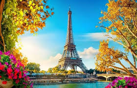
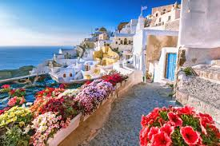
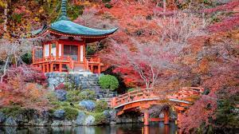
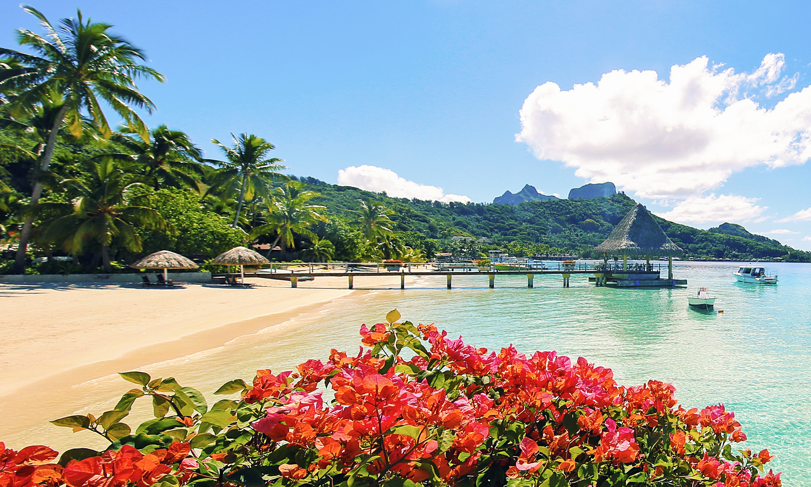
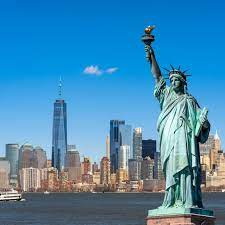

Here you can find information about our top tourist destinations.
| Photo | Destination | Description |
|---|---|---|
|  | Paris, France | Paris, the capital city of France, is a beautiful city with stunning architecture, amazing cuisine, and a vibrant nightlife. Whether you're a seasoned traveler or a dreamer, Paris is known as the "City of Love" and renowned for its art, culture, and iconic landmarks such as the Eiffel Tower and Louvre Museum, Paris consistently ranks among the top destinations for traveler. |
|  | Santorini, Greece | Santorini is a beautiful island famous for its stunning sunsets, white-washed buildings with blue domes, and crystal-clear waters, Santorini is a picturesque island in the Aegean Sea that attracts visitors seeking romance and breathtaking views. |
|  | Kyoto, Japan | Rich in history, Kyoto is home to beautiful temples, traditional tea houses, and stunning gardens. Visitors are drawn to its well-preserved traditional architecture and the cultural significance of its historic sites. |
|  | Bora Bora, French Polynesia | Bora Bora is a beautiful island in the South Pacific Ocean. It is known for its beautiful beaches, crystal-clear waters, and stunning landscapes. Visitors can explore the island's natural wonders, including its volcanic islands, coral reefs, and tropical islands. |
|  | New York City, USA | Known as "The Big Apple," New York City is a melting pot of cultures and offers a diverse range of attractions, including Broadway shows, iconic landmarks like Times Square and Central Park, and world-class museums. |